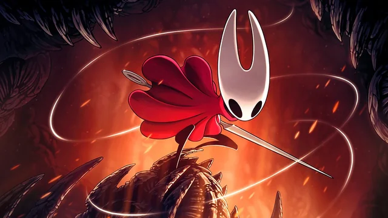

Hornet é um personagem importante em Hollow Knight, conhecido por sua agilidade, habilidades de combate e papel crucial na história do jogo. Ela é uma guerreira habilidosa que protege o reino de Hallownest e tem uma conexão misteriosa com o protagonista, o Cavaleiro. Hornet é uma figura enigmática, muitas vezes aparecendo em momentos-chave para desafiar o jogador ou fornecer informações importantes sobre a trama. Sua presença adiciona profundidade à narrativa e oferece desafios emocionantes para os jogadores enfrentarem ao longo de sua jornada em Hollow Knight.

| Habilidade | Descrição | Fala |
|---|---|---|
| Dash | Ela avança super rápido em linha reta | SHA! |
| Agulha | Ela ataca com uma agulha, indo e voltando como um boomerang. | EDINO! |
| Armadilhas | Ela espalha armadilhas pelo chão, que explodem quando o inimigo pisa nelas. | GIT GUD! |
| Giro com Linha | Ela gira em torno de si mesma, atacando inimigos ao redor. | HEGALE! |
| Salto com Linha | Ela salta para o ar e ataca com a agulha, atingindo inimigos acima dela. | HAA! |